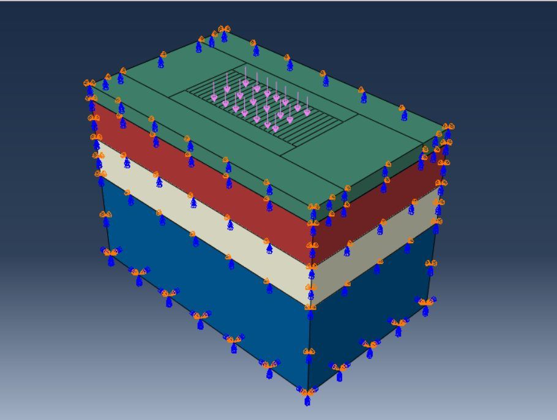

Pavement response to overloaded trucks
Overloaded trucks are common on Nepal's roads and wear them out quickly. Our group looked at how much damage overloading causes, using pavement design, finite element analysis and a damage analysis.
My part was the finite element work. I built a 1.5 x 1.2 x 1.41 m pavement block in Abaqus with asphalt, base, subbase and subgrade layers, and applied the tire load as a 0.758 MPa pressure over a 0.600 x 0.416 m area.

Before using the model, I checked a static version against IITPAVE. The displacement, vertical stress and horizontal strain at 0.11 m depth were within 2 to 6% of IITPAVE. After that I ran elastic and viscoelastic models, single-wheel loads at different speeds, and a double-wheel load at 20 km/h.

